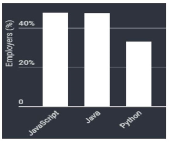
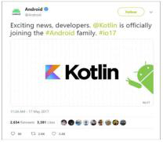
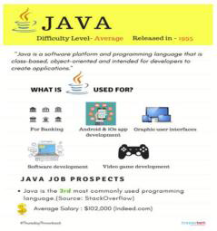

Here are a few programming languages we recommend for coders who want to make it big in 2020:
- JavaScript/ NodeJS:
JavaScript (also known as NodeJS) is a popular language among developers who need to work on server-side and client-side programming.

- Kotlin:
Kotlin is a general-purpose programming language with type inference. It is designed to be completely interoperable with Java. Moreover, from the time Android announced it as its first language, Kotlin offers features that developers ask for.

- Java:
Java is celebrating its 24th birthday this year and has been one of the most popular programming languages used for developing server-side applications.
